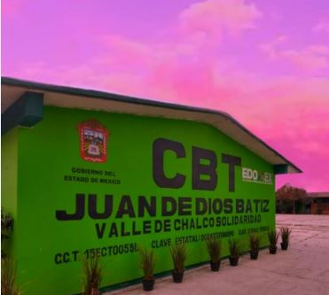

CBT JUAN DE DIOS BÁTIZ
VALLE DE CHALCO SOLIDARIDAD
Fomento a la lectura:
El concepto hábito lector comprende dos grandes vertientes: la repetición frecuente del acto de leer y el conjunto de destrezas y habilidades implicadas en esta actividad, adquiridas gracias a su iteración y al progresivo dominio de sus mecanismos. En cualquiera de las dos acepciones subyace en realidad la misma dicotomía: la voluntad frente a la obligatoriedad.
Fomento a la escritura:
- Motivación lejana
- Márcate un objetivo
- Crea el entorno adecuado
- Identifica cuál es tu objetivo, qué quieres crear o lograr
- Plantea una recompensa, puede ser conocimiento, entretenimiento, etc.
- Idealiza tus personajes e identifícalos
- De esta forma serán un recuerdo permanente.
- Usa la técnica de las escenas inconclusas
- Date permiso para hacerlo mal
- Motivación cercana, puedes probar lo siguiente:
- Puedes probar a castigarte si no cumples con el tiempo o la cuota diarios que te hayas fijado. Te quedas sin la noche de pizza o sin ver tu serie favorita.
- Puedes probar a recompensarte. Por ejemplo, si mantienes el hábito durante treinta días consecutivos puedes comprarte esa camiseta que tanto te gusta o ir a cenar a tu restaurante favorito.
- O bien puedes probar a comprometerte con alguien. Dile a una persona cuya opinión sobre ti te resulte importante lo que quieres hacer: escribir todos los días mil palabras, escribir todos los días durante dos horas… Y luego permite que esa persona compruebe que estás cumpliendo con lo que has prometido.
- Incluso puedes incluir el elemento de recompensa o castigo y dejar esas opciones en sus manos.
Información Institucional:

¿Quiénes somos?
Los Centros de Bachillerato Tecnológico (CBT) son una modalidad de Bachillerato bivalente, ¿Qué es esto? Es un tipo de bachillerato en el cual se llevan a cabo las materias del tronco común, con la diferencia de que llevarás al mismo tiempo una Carrera Técnica, agrupadas en cuatro áreas o campos de formación: Biotecnología, Salud, Servicios e Industrial.
En el CBT Juan De Dios Bátiz, Valle de Chalco Solidaridad se imparte la Carrera de Técnico en Informática, que forma parte del campo de servicios y es cursada por medio de una estructura modular.
Carrera de Técnico en informática
Es una carrera técnica, en la cual al terminar tus estudios podrás incluirte al campo laboral o continuar con el Nivel Superior. Es una de las carreras más demandadas ya que al ir revolucionando las Tecnologías de la Información y la Comunicación se necesitarán personas capaces de diseñar, gestionar e implementar este tipo de herramientas. En esta carrera se ofrecen las competencias profesionales que permiten al estudiante realizar actividades dirigidas a analizar, diseñar, desarrollar, instalar y mantener software de aplicación tomando como base los requerimientos del usuario.
En el Centro de Bachillerato Tecnológico (CBT) Juan de Dios Bátiz, Valle de Chalco Solidaridad se ha hecho la creación y montaje de una página web para el análisis de la lectura y escritura; con herramientas para la mejora de los mismos, creada por los alumnos del tercer grado grupo dos; del área de estadía a cargo del profesor Solís Díaz Luis.
Los datos de esta gran institución son los siguientes:
- Ubicación: Av. Anáhuac, Colonia Niños Héroes, Código Postal:56617. Valle de Chalco Solidaridad
- Teléfono: (55)-26-45-37-09